The original, as published: Tony R. Kuphaldt, Lessons In Industrial Instrumentation, EIA/TIA-232, 422 and 485 networks. CC BY 4.0, https://creativecommons.org/licenses/by/4.0/. Imported as published, from https://www.ibiblio.org/kuphaldt/socratic/sinst/book/liii.pdf https://www.ibiblio.org/kuphaldt/socratic/sinst/book/liii.pdf
The EIA/TIA-232C standard, formerly40 known as RS-232, is a standard defining details found at layer 1 of the OSI Reference Model (voltage signaling, connector types) and some details found at layer 2 of the OSI model (asynchronous transfer, “flow control” or “handshaking” signals between transmitting and receiving devices). In the early days of personal computers, almost every PC had either a 9-pin or a 25-pin connector (and sometimes multiple of each!) dedicated to this form of digital communication. For a while, it was the way peripheral devices such as keyboards, printers, modems, and mice connected to personal computers. USB (Universal Serial Bus) has now all but replaced EIA/TIA-232 for personal computers, but it still lives on in the world of industrial devices.
EIA/TIA-232 networks are point-to-point, intended to connect only two devices41. The signaling is single-ended (also known as unbalanced), which means the respective voltage pulses are referenced to a common “ground” conductor, a single conductor used to transfer data in each direction:
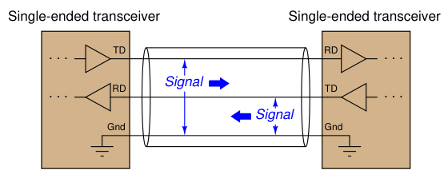
EIA/TIA-232 specifies positive and negative voltages (with respect to the common ground conductor) for its NRZ signaling: any signal more negative than −3 volts detected at the receiver is considered a “mark” (1) and any signal more positive than +3 volts detected at the receiver is considered a “space” (0). EIA/TIA-232 transmitters are supposed to generate −5 and +5 volt signals (minimum amplitude) to ensure at least 2 volts of noise margin between transmitter and receiver. The voltage limits and NRZ encoding of EIA/TIA-232 comprise the OSI layer 1 elements of the standard.
40The designation of “RS-232” has been used for so many years that it still persists in modern writing and manufacturers’ documentation, despite the official status of the EIA/TIA label. The same is true for EIA/TIA-
422 and EIA/TIA-485, which were formerly known as RS-422 and RS-485, respectively. 41“Daisy-chain” networks formed of more than two devices communicating via EIA/TIA-232 signals have been built, but they are rarely encountered, especially in industrial control applications.
Cable connectors are also specified in the EIA/TIA-232 standard, the most common being the DE-942 (nine-pin) connector.
The “pinout” of a DE-9 connector for any DTE (Data Terminal
Equipment) device at the end of an EIA/TIA-232 cable is shown here:
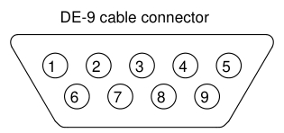
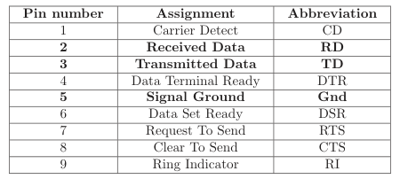
Those terminals highlighted in bold font represent those connections absolutely essential for any EIA/TIA-232 link to function. The other terminals carry optional “handshaking” (“flow control”) signals43 specified for the purpose of coordinating data transactions (these are the OSI layer 2 elements of the EIA/TIA-232 standard). For DCE (Data Communications Equipment44) devices such as modems, which extend the EIA/TIA-232 signal path onward to other devices, the assignments of transmitting and receiving pins are swapped. For example, pin 2 is the Transmitted Data (TD) output while pin 3 is the Received Data (RD) input on a DCE device. This allows straight pin-to-pin cable connections between the DTE and DCE devices, so the transmit pin of the DTE device connects to the receive pin of the DCE, and vice-versa.
42Often (incorrectly) called a “DB-9” connector. 43The way hardware-based flow control works in the EIA/TIA-232 standard involves two lines labeled RTS (“Request To Send”) and CTS (“Clear To Send”) connecting the two devices together on a point-to-point serial network in addition to the TD (“Transmitted Data”) and RD (“Received Data”) and signal ground lines. Like the TD and RD terminals which must be “crossed over” between devices such that the TD of one device connects to the RD of the other device and vice-versa, the RTS and CTS terminals of the two devices must be similarly crossed. The RTS is an output line while the CTS is an input, on both devices. When a device is able to receive data, it activates its RTS output line to request data. A device is not permitted to transmit data on its TD line until it is cleared to send data by an active state on its CTS input line. 44Also known by the unwieldy acronym DCTE (Data Circuit Terminating Equipment). Just think of “DTE” devices as being at the very end (“terminal”) of the line, whereas “DCE” devices are somewhere in the middle, helping to exchange serial data between DTE devices.
The following diagram shows the minimum cable requirements for an EIA/TIA-232 serial communication link consisting of a pair of DTEs connecting through a pair of DCEs. This minimal point-to-point network assumes the devices are configured for either software flow control (i.e. digital codes send over the TD/RD lines requesting the transmitting device to halt and resume) or no flow control at all:
EIA/TIA-232 communication using software flow control
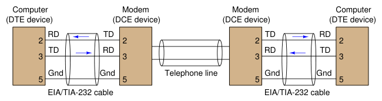
In order to utilize hardware flow control, the EIA/TIA-232 cable(s) must include two additional conductors connecting the RTS and CTS pins between devices to enable them to signal each other with voltage-level states declaring when they are ready to receive more data:
EIA/TIA-232 communication using hardware flow control
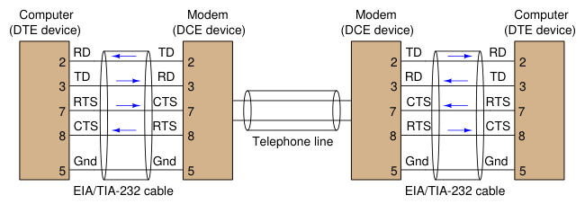
Improper flow control configuration is a common commissioning problem in new serial networks. If the devices are configured for hardware handshaking (i.e. necessitating RTS and CTS lines in the connecting cables) or those devices simply default to hardware handshaking as new, but cables lacking RTS-to-CTS lines are used between these devices, the devices will never communicate because their respective (floating) CTS inputs will remain in the idle state and therefore the devices “think” they do not have permission to send data. Hardware flow control necessitates serial cables with at least five conductors, while software flow control needs only three (TD, RD, and Ground).
If one desires to directly connect two DTE devices together using EIA/TIA-232, a special cable called a null modem must be used, which swaps the connections between pins 2 and 3 of each device. A “null modem” connection is necessary for the transmit pin of each DTE device to connect to the receive pin of the other DTE device:
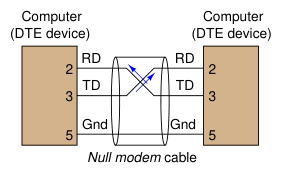
The concept of a “null modem” is not unique to EIA/TIA-232 circuits45. Any communications standard where the devices have separate “transmit” and “receive” channels will require a “null modem” connection with transmit and receive channels swapped to be able to communicate directly without the benefit of interconnecting DCE devices. Four-wire EIA/TIA-485 and Ethernet over twisted-pair wiring are two other examples of digital communication standards where a “null” style cable is required for two DTE devices to directly connect. EIA/TIA-232 networks may be simple, but they tend to be rather limited both in data bit rate and distance, those two parameters being inversely related. References to the EIA/TIA-232 standard repeatedly cite a maximum data rate of 19.2 kbps at 50 feet cable rate. Experimental tests46 suggest greater rate/distance combinations may be possible in optimum conditions (low cable capacitance, minimum noise, good grounding). Since EIA/TIA-232 was developed to connect peripheral devices to computers (typically within the physical span of one room), and at modest speeds, neither of these limitations were significant to its intended application.
45In fact, the concept is not unique to digital systems at all. Try talking to someone using a telephone handset held upside-down, with the speaker near your mouth and the microphone hear your ear, and you will immediately understand the necessity of having “transmit” and “receive” channels swapped from one end of a network to the other! 46Once I experimented with the fastest data rate I could “push” an EIA/TIA-232 network to, using a “flat” (untwisted, unshielded pair) cable less than ten feet long, and it was 192 kbps with occasional data corruptions. Park, Mackay, and Wright, in their book Practical Data Communications for Instrumentation and Control document cable lengths as long as 20 meters at 115 kbps for EIA/TIA-232, and 50 meters (over 150 feet!) at 19.2 kbps: over three times better than the advertised EIA/TIA-232 standard.
The next two network standards47 are less comprehensive than EIA/TIA-232, specifying only the electrical characteristics of signaling without any regard for connector types or any layer 2 (handshaking) considerations. Within these domains, the 422 and 485 standards differ significantly from 232, their designs intended to optimize both maximum cable length and maximum data rate.
To begin with, the electrical signaling used for both EIA/TIA-422 and EIA/TIA-485 is differential rather than single-ended (balanced rather than unbalanced). This means a dedicated pair of wires is used for each communications channel rather than a single wire whose voltage is referenced to a common ground point as is the case with EIA/TIA-232:
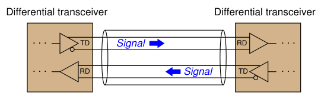
Using dedicated wire pairs instead of single conductors sharing a common ground means that EIA/TIA-422 and EIA/TIA-485 networks enjoy much greater immunity to induced noise than EIA/TIA-232. Noise induced via electrostatic coupling along the length of a network cable tends to be fairly equal (i.e. common-mode) on all non-grounded conductors of that cable, but since the receivers in EIA/TIA-422 and EIA/TIA-485 networks response only to differential voltages (not common-mode voltages), induced noise is ignored.
47Former labels for EIA/TIA-422 and EIA/TIA-485 were RS-422 and RS-485, respectively. These older labels persist even today, to the extent that some people will not recognize what you are referring to if you say “EIA/TIA-422” or “EIA/TIA-485.”
The advantage differential signaling enjoys over single-ended signaling may be understood by graphical comparison. The first illustration shows how electrical noise imposed on the ungrounded conductor of a simplex communications cable becomes superimposed on the digital data signal, detected at the receiving end. Noise is modeled here as a voltage source in series along the ungrounded conductor, near the receiving end. In reality, it is more likely to be distributed along the bulk of the cable length:
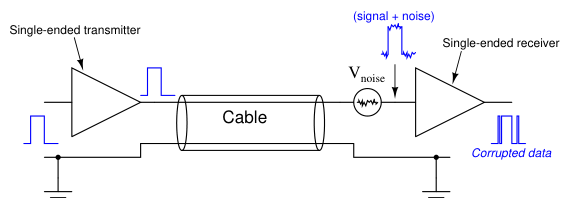
If the superimposed noise voltage detected at the receiver has sufficient peak-to-peak amplitude to push the signal voltage above or below critical threshold levels, the receiver will interpret this as a change of digital state and cause corruptions in the data stream. By contrast, any noise superimposed on ungrounded conductors in a differential signaling circuit cancel at the receiver, because the close proximity of those two conductors ensures any induced noise will be the same. Since the receiver responds only to differential voltage between its two inputs, this common-mode noise cancels, revealing a “clean” data signal at the end:
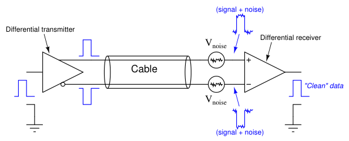
Both EIA/TIA-422 and EIA/TIA-485 systems use differential signaling, allowing them to operate over much longer cable lengths at much greater cable speeds than EIA/TIA-232 which is singleended. Other high-speed network standards including Ethernet and USB (Universal Serial Bus) use differential signaling as well.
EIA/TIA-422 is a simplex (one-way) communications standard, whereas EIA/TIA-485 is a duplex (two-way) standard. Both support more than two devices on a network segment. With EIA/TIA-422, this means one transmitter and multiple receivers. With EIA/TIA-485, this may include multiple transceivers (devices capable of both transmitting and receiving at different times: half-duplex). Four wires are necessary to connect two such devices when full-duplex (simultaneous two-way communication) is required, and full-duplex is only practical between two devices (as shown in the previous illustration). EIA/TIA-422 and EIA/TIA-485 specify positive and negative voltage differences (measured between each dedicated wire pair) for its signaling, both for transmitting devices as well as receiving devices. A receiver must recognize any signal more negative than −200 millivolts as a “mark” (1)
and any signal more positive than +200 millivolts as a “space” (0). These voltage thresholds are much lower than those specified for EIA/TIA-232 (± 3 volts) due to the relative lack of noise on differential signal lines compared to ground-referenced signal lines. Simply put, less noise voltage on the lines means the signal doesn’t have to be as strong to “swamp” that noise and be reliably detected at the receiver. EIA/TIA-422 transmitters (“drivers”) are supposed to generate −2 and +2 volt signals (minimum amplitude) to ensure at least 1.8 volts of noise margin between transmitter and receiver. EIA/TIA-485 drivers are allowed a smaller noise margin, with the minimum signal levels being −1.5 volts and +1.5 volts.
The maximum recommended cable length for both EIA/TIA-422 and EIA/TIA-485 networks is 1200 meters, which is greater than half a mile48. The maximum data rate is inversely dependent on cable length (just as it is for EIA/TIA-232), but substantially greater owing to the noise immunity of differential signaling. With the long cable lengths and higher data rates made possible by differential signaling, some applications may require terminating resistors to eliminate reflected signals. Experiments conducted by Texas Instruments demonstrate acceptable signal integrity at
200 kbps over a cable 100 feet long with no termination resistors. With a termination resistor at the receiver input (for simplex data transmission) in place on the same 100 foot cable, a data rate of 1 Mbps was achieved.
481200 meters is the figure commonly cited in technical literature. However, Park, Mackay, and Wright, in their book Practical Data Communications for Instrumentation and Control document EIA/TIA-422 and EIA/TIA-485 networks operating with cable lengths up to 5 km (over 16000 feet!) at data rates of 1200 bps. Undoubtedly, such systems were installed with care, using high-quality cable and good wiring practices to minimize cable capacitance and noise.
Due to the lack of standardization for cable connectors in EIA/TIA-422 and EIA/TIA-485 networks, there are no established pin numbers or labels for the differential transmit and receive conductors. A common convention seen in industrial devices, though, are the labels “A” and “B”, alternative labeled “−” and “+” or “A−” and “B+” in honor of their idle-state polarities (the
“mark” or “1” state). In a 4-wire EIA/TIA-485 network, where full-duplex operation is possible, the terminals and connections will look something like this:
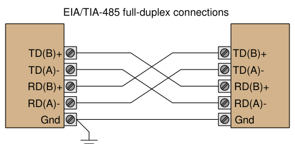
The good news with regard to 422/485 terminal labeling is that you will not harm the electronics by accidently connecting the wires with incorrect polarity. If, for example, you cannot get a 422/485 receiver to acknowledge data sent by a 422/485 transmitter, you may try swapping the polarity (A/B, or +/−connections) without risking harm to the device and see if that fixes the problem.
Note the use of a ground conductor connecting both devices together. Even though the data signaling is differential and therefore does not theoretically require a common ground connection (since common-mode voltage is ignored), a ground connection helps ensure the common-mode voltage does not become excessive, since real receiver circuits have practical limits on the amount of commonmode voltage they can tolerate.
A popular connection scheme for EIA/TIA-485 half-duplex operation is where the Transmitted Data (TD) and Received Data (RD) terminal pairs are combined, so that two-way communication may occur over one pair of wires. With such devices, it is customary to label the terminals simply as “Data” (A−and B+):
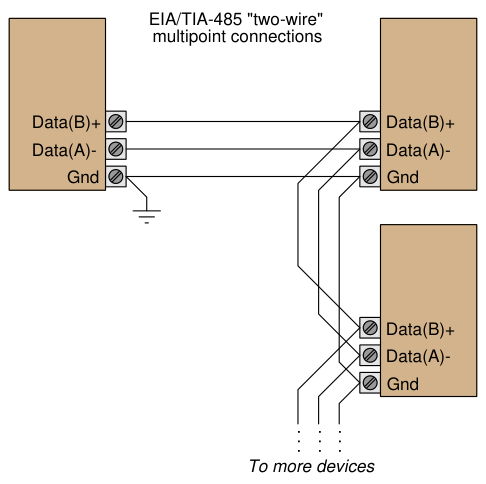
The possibility of half-duplex operation raises the question of channel arbitration and device addressing, but since the EIA/TIA-485 standard does not specify anything outside of layer 1 concerns, these matters are left to other networking standards to fulfill. In other words, EIA/TIA-
485 is not a complete data communications standard, but merely serves as the layer 1 component of other standards such as Allen-Bradley’s Data Highway (DH), Opto 22’s Optomux, and others.
Given the potential for high-speed communication along lengthy runs of cable using EIA/TIA-
422 or EIA/TIA-485, the potential necessity of terminating resistors to prevent signal “reflection” is very real. Networks operating with short cables, and/or slow data rates, may work just fine without termination resistors49. However, the effects of reflected signals grows more pronounced as the reflection time (time-of-flight for the signal to travel “round-trip” from one end of the cable to the other and back) approaches a substantial fraction of the bit time.
49In fact, a great many EIA/TIA-485 networks in industry operate “unterminated” with no problems at all.
No network should have more than two termination resistors, one at each (far) end, and care should be taken to limit the lengths of all cable “stubs” or “spurs” branching offof the main “trunk” cable:
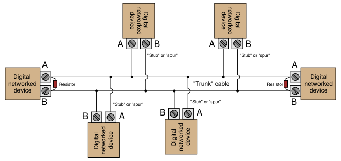
The proper value for these resistors, of course, is equality with the characteristic impedance50 of the cable itself. A termination resistor value greater than the cable’s surge impedance will still allow positive reflections of limited amplitude, while a termination resistor value less than the cable’s surge impedance will still allow negative reflections of limited amplitude. However, the inclusion of resistive loads to an EIA/TIA-422 or EIA/TIA-485 network may cause other problems. Many devices use a pair of internal biasing resistors to establish the “mark” state necessary for idle conditions, connecting the “A” terminal to the negative supply voltage rail through a resistor and the “B” terminal to the positive supply voltage rail through another resistor. Connecting a terminating resistor between terminals “A” and “B” will alter the voltage levels normally provided by these biasing resistors, consequently causing problems.
50For detailed explanation of how and why this is necessary, refer to section 5.10 beginning on page 475.
The following schematic diagram shows the equivalent circuit of an EIA/TIA-485 transceiver device, with and without a terminating resistor connected:
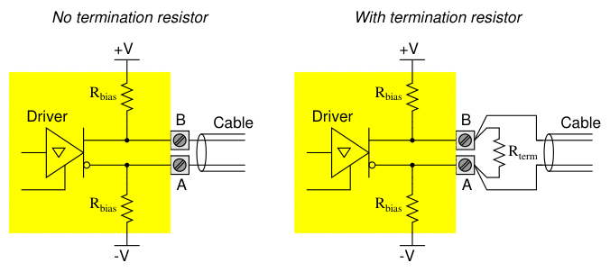
When the driver is in high-impedance (High-Z) mode, the “idle” state of the wire pair will be established by the bias resistors (equal to the supply voltage so long as there is no loading). However, a terminating resistor will act as a DC load to this biasing network, causing a substantial reduction of the “idle” state voltage toward 0 volts. Recall that −200 millivolts was the receiving threshold value for a “mark” state in both EIA/TIA-422 and EIA/TIA-485 standards (terminal “A” negative and terminal “B” positive). If the presence of a terminating resistor51 reduces the idle state voltage to less than 200 millivolts absolute, the receiver(s) will not be able to reliably read the network’s idle state and communication errors will result. Thus, we see that the inclusion of any terminating resistors must be accompanied by an analysis of the devices’ bias resistor networks if we are to ensure robust network operation. It is foolhardy to simply attach terminating resistors to an EIA/TIA-422 or EIA/TIA-485 network without considering their combined effect on biasing.
51Actually two terminating resistors in parallel, since one with be at each end of the cable! The actual DC biasing network will be more complicated as well if more than one device has its own set of internal bias resistors.